来源：https://asmdqdmydn.feishu.cn/docx/EpmTdjFJ3obnOOxxrPAc6bBJnud
谈钱就聊聊我们今年正操作的项目：快手网红切片带货项目
我们做快手网红切片带货是从2022年7月份开始的尝试，半年的时间建立了与快手平台还有网红机构之间的联系，跑通了快手切片的流程，业绩翻倍增长，于是在2023年的2月签署独家授权合同正式开始推动，这一个多月的时间，团队达到2000多人，反馈非常的好，也和大家分享一下我们为什么做快手切片带货。
要说快手网红切片，当然要从什么是网红切片（也称为IP切片）开始。
IP切片带货，生财的朋友们大多数应该都知道，就是把网红直播的片段剪辑出来发送到短视频平台来带货，抖音IP切片去年那真叫一个火，各个网红，明星都放出了授权。同理快手网红切片也是通过剪辑快手网红直播片段发视频来带货。
为什么做IP切片带货:
对于一般人来说分析一个项目可不可以操作，主要看其普适性，就是看适不适合大多数人，介绍项目不应该只拿一个爆了的特例来宣传其可行性。
做IP切片主要因为网红，明星本身带流量，做IP切片带货更容易爆播放出单，从抖音小杨哥开始做切片授权，现在各个明星、网红基本都授权了切片。比如郝劭文，张柏芝，黄圣依，衣哥，董先生，交个朋友等基本上明星，大网红都开了切片。
去年的时候我们也做了抖音IP切片的团长，当时各个社群也都有推广，我们团队也有做郝劭文，朱梓骁，张萌的授权，当时我们也招了几百人，也跑出来了一些账号，月gmv几万，几十万上百万的，但比例太少。
现在也会继续授权抖音明星的切片，只是没有把重心放在这里了。
抖音切片坚持下来的确实也真的赚钱，现在团队就有月佣10w+的，真的是踩中了红利加上幸运星降临，靠一个品吃了一年的红利。吃到现在还月佣金10w+。
抖音切片月佣金13w
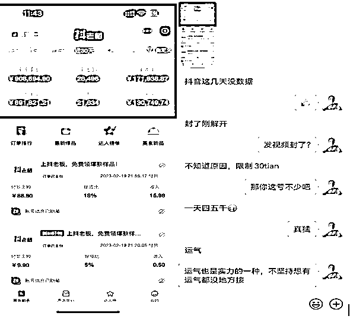
但这种属于特例，不具有普适性。
不主推抖音还有个原因就是抖音的成本太高，首先开橱窗需要粉丝，去年开始还行1000粉丝内部也就四五十块，后来成本越来越高都200左右了。而且掉粉严重刷1000不够得多刷几百，一千的，成本就三四百了。再加上还需要500元保证金。这就需要1000元的成本。这样无论是作为公司矩阵做账号还是个人做账号成本都比较高。
还有违规的问题，抖音限流不告诉你原因，是剪辑的原因还是什么的，有时候涉及肖像权直接封号。本来抖音流量给的也不好，就这样整体出来的成绩不是很好。
另外抖音切片授权已经卷的太厉害了。一个IP三个月内就布局上万个账号，竞争非常大。现在入局有点太激烈了，账号跑出来的比较难，反馈来的慢，普通人很难坚持。
但这也证明IP切片是大有可为的。只要有直播带货，切片项目就可以持续做。
在去年7月份的时候我们开始接触快手的一个管理。跟快手电商部的一个负责人谈的时候他说可以来快手做切片。那个时候小杨哥的切片在快手已经跑起来了，但他们没有直接和快手官方谈，因为利益的关系，直接导致小杨哥4000剪辑账号全军覆没，这个事情应该也有不少的朋友知道。
在8月底的时候我们和二驴的通过快手官方签了授权，之后开始推进快手切片的事情。最初试运作，没有大面积的开放授权，做了有100多个账号，从9月份到12月份，我们每个月的业绩都在翻倍的增长。
在2023年2月份的时候和二驴团队确定了正式的切片商业化运营。
快手切片现在还是初期，授权切片的网红还不多，做切片的人也不多。暂时还没有那么大的竞争，还处在蓝海阶段。
先说人群，以前就有南抖北快的说法，抖音走的是城市路线，快手走的农村包围城市路线，起初快手还是短视频届的老大哥，后来被抖音超车后就甘于人后了。也不想着进攻一二线人群了。
不知道群里有多少朋友用快手，对于我自己来说如果不是为了做快手切片，我是不看快手的。我相信群里的朋友除了做快手相关项目的，其他人使用快手的也不多。
快手大家用的都少，更何况快手切片啦。抖音切片授权的轰轰烈烈，快手切片有多少朋友听过。
是快手带货太少了吗，可不要小看了快手老铁的实力。如果没有记错的话，直播带货就是由快手开始的。
这是快手带货周榜
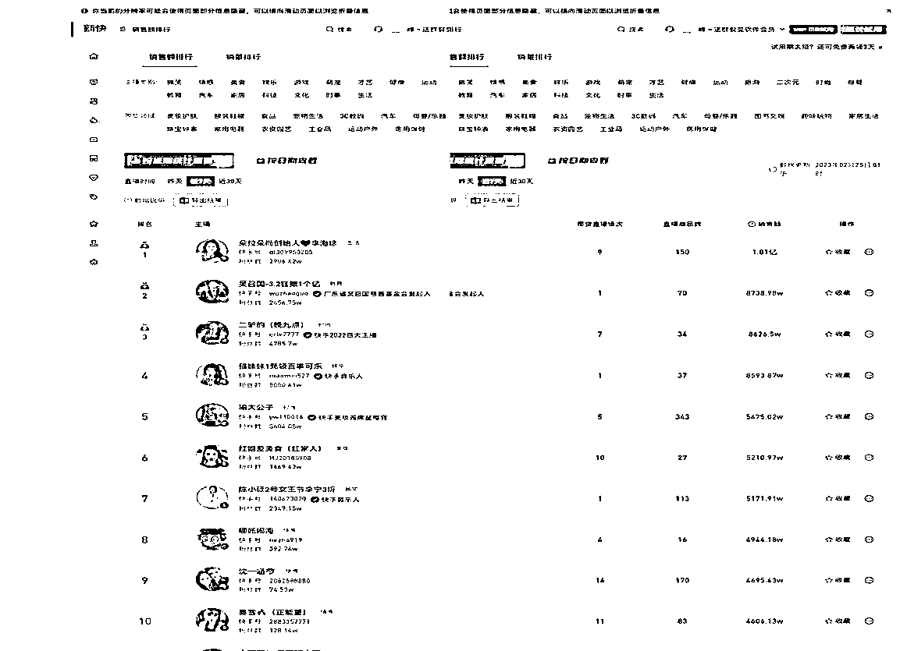
带货额还是不错的，而且老铁的信任度很高。
这时候很少人参与的时候进去切片，这就是蓝海，就是优势。
现在快手官方授权的切片有6个主播，辛巴，二驴的，瑜大，吴召国，老葛还有个直播团队还没开始做。
快手授权结算方式有两种，一种是所有佣金先到主播手里，之后通过主播来结算，辛巴，吴兆国，老葛都是这种，和他们签授权之后需要到月通过他们来结算带货佣金。
现在快手切片做的最好的是辛巴，一哥就是有钱，账号投放给的也大。就是结算方式让外部参与的个人剪辑手不太喜欢。
另一种就是通过快手平台结算，现在二驴的切片是通过平台直接结算的，出单多少，多少佣金一目了然，提现的时候直接通过快手提现到微信或者支付宝就可以。这和总结算方式好的地方在于看到的佣金都是自己的了，不需要在和机构分成，更加方便。
1、账号要求低，资金投入低，
一个人是可以实名两个快手账号，营业执照可以认证5个账号
想要实现躺赚的同学，建议两个账号同时操作。
0粉丝0保证金开橱窗
2、快手切片的优势还有处于初期参与的人少，反馈来的非常快，剪辑的人更有动力。
快手挂车视频一天可以随便发，正反馈一来一天都想多剪几条，剪辑的多反馈给的更多，就这样正循环。
从2月末开始正式放授权开始，最初也是自己招募授权人员，招了有100多人，操作项目反馈还不错。
有人第一天发视频播放就爆，还有爆单的。
第一天发视频17w的播放
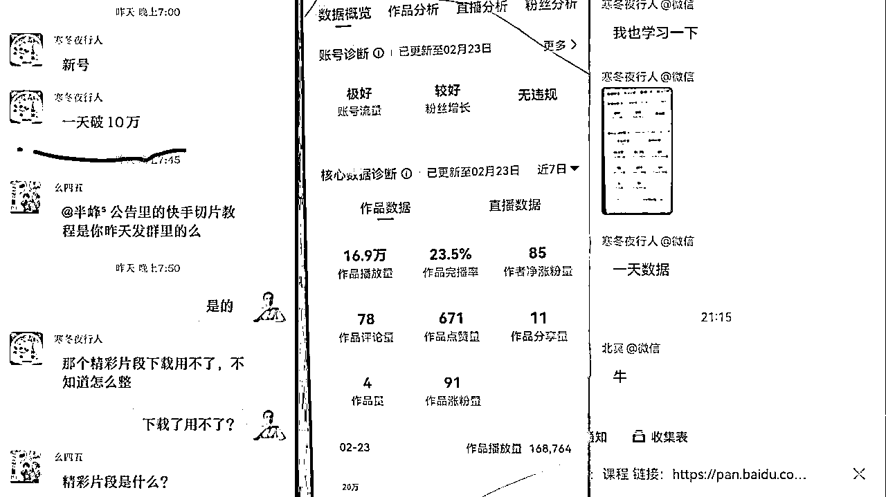
第一天发视频就爆单的，自己都没弄明白怎么看佣金，前一天发的视频上30w播放的，出了1000多的gmv，不到200元佣金
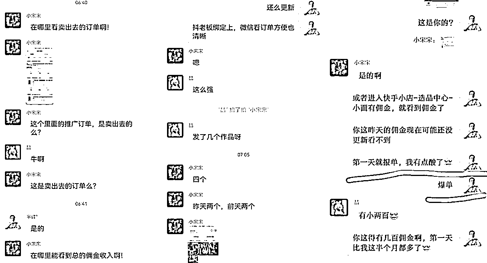
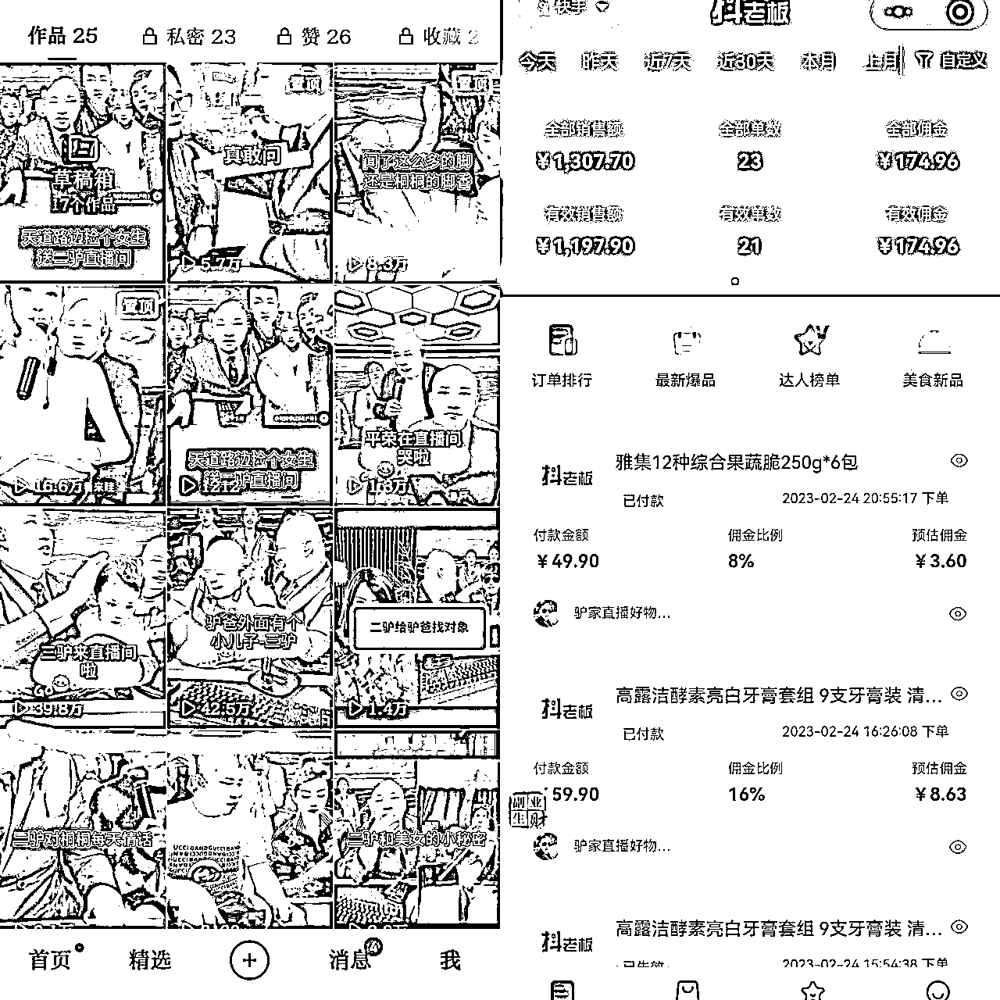
这个是我自己2.24日用老号改的切片账号，当天隐藏了67条作品，当晚发视频，3个小时2000多播放。
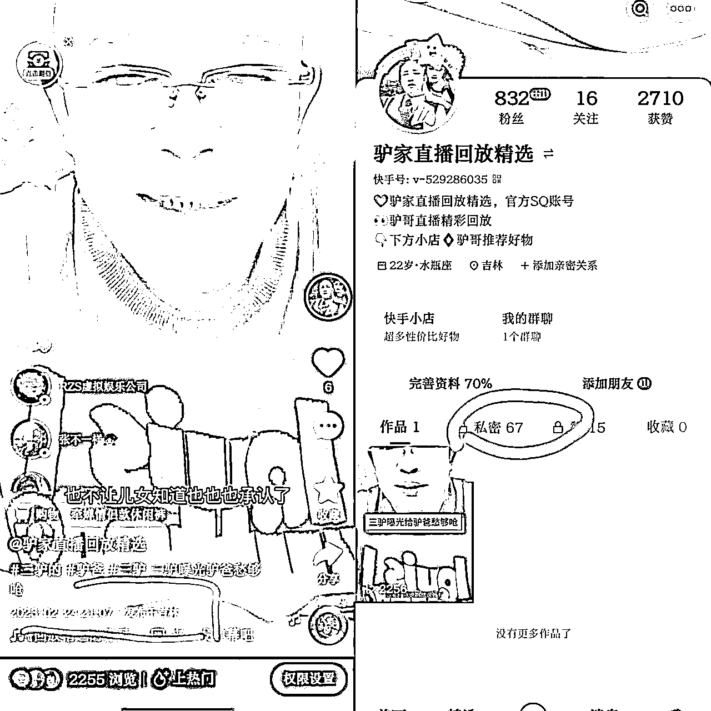
这些都是刚开始时的新手案例，新号，老号都能直接发。
各种反馈都来的不错，单日成交过万的，单日佣金过千的，17天的时候佣金3600元，有不少的案例。
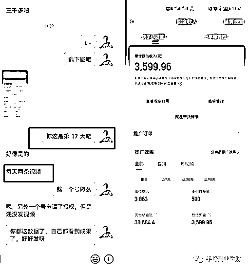
因为自己本身没有形成大IP，没有生财一呼万应的影响力，仅仅自己招募的方式还是太慢了，远远达不到我们和二驴这边签的要求，于是我就想到了合作的方式。合作相识的一些IP做推广。采用的是他们引流我交付的方式，因为本身有过交往，我也把自己这边的反馈发给他他们，保证我的交付不会影响他们信誉，同时还会有提升。很快与几位IP达成了合作。在3月份我这边的学员也达到了1000多人。
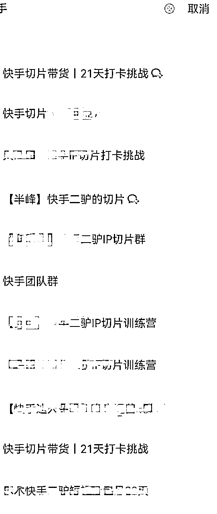
经过一个多月的运行，4月份开始反馈来的就更好了，每天都有新学员出单反馈，只是出单已经不能满足大家了，对大家比较起激励作用还得是爆单，一睁眼几百，一天几千的那种。
还好现在每天这种爆单反馈不断，时时给大家以提醒，爆单总有时，谁都有机会，只要坚持发，迟早的问题。不是不爆，时辰未到。
一些新学员的4月出单图;
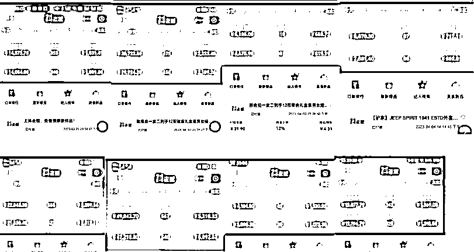
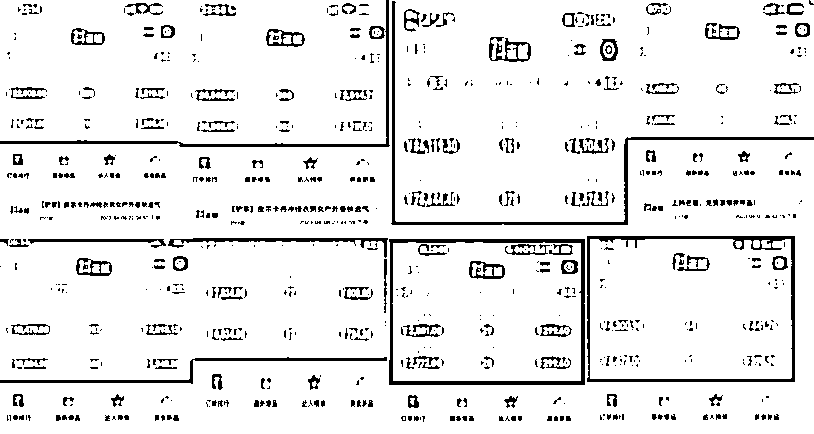
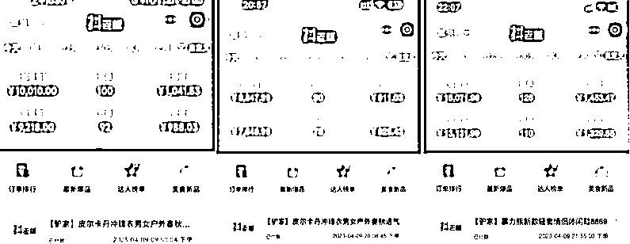
详细看下面：
1、短视频带货
做过切片的都知道，其实做IP切片就是个搬砖的活，把大主播直播视频录制下来，之后剪辑片段结合产品带货就可以了。
最重要的地方就是剪辑方法多用几种来去重，因为直播就这几个小时，大家都用这素材来剪辑，很容易被检测到非原创。
快手对于搬运检测还是比较严格的，如果多次被检查非原创就会关小黑屋1个月。
现在快手对于主播直播切片的内容还没有太大的限制，可以整段视频全是主播的直播内容，这样视频一般内容让粉丝喜欢，几分钟的内容完播也都不错，流量也可以。
最开始的时候我们剪辑用的也简单就是：配音+特效+贴纸+文字+画中画
后来总有号被限制就增加了剪辑的姿势升级了下剪辑方法：
纯素材剪辑升级版2.0 ：配音+自制背景+矢量扫光+水印+特效+素材关联+调色+变速+蒙版+贴纸+文字
以及3.0，加入真实拍摄，这个拍摄需要精力，没有什么人去操作这个。
现在越来越多的朋友开始加入解说了，播放和出单效果确实比直接剪辑来的更好，就是剪辑用时长了些，需要想解说文案。也有朋友直接找到对标的账号把按他的视频一比一剪辑，这样的效果来的很不错，就有学员通过模仿同行剪辑视频爆单了。
2、直播带货：
除了剪辑视频之外，直播也是不错的选择，团队有人就每天直播，出单效果也是不错的，每天有个几十单的出单。
直播采用的是实物直播，就是买一些价格便宜的样品，加上转盘，灯光，时钟，和放上音乐，用手机对着这个场景直接直播。
也有朋友用的纯无人素材，有的号播没问题，有的号被查到无人直播被罚款了。安全起见还是用实物好一些。
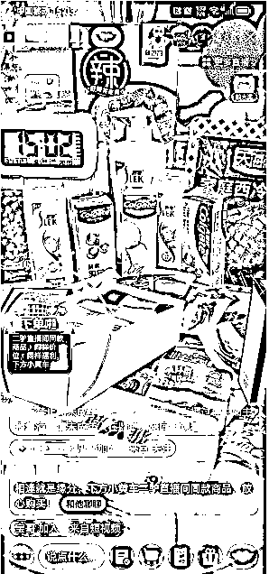
网红切片有一个需要注意的地方就是无论做谁的切片一定联系好授权，要不容易被举报封号，得不偿失。
有朋友就做辛巴切片，出单确实不错，就是一个号就只能挺4、5天就废，根本玩不动。
基本上的玩法就是这样，玩法简单，主要就是一个时机，现在还是开始，等到7月份之后竞争会激烈起来，如果想做一块的可以部署起来了。
以上就是我们团队操作快手切片的情况，希望对大家有帮助。